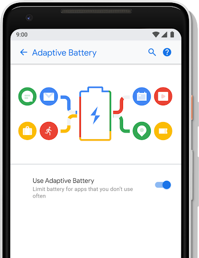
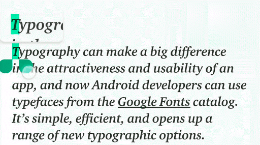

6 августа 2018 года корпорация Google объявила о релизе новой версии операционной системы Android. В тестировании разработки приняли участие более 140 тысяч участников программы Android Beta. Нововведения коснулись и простых пользователей, и разработчиков. Исходники Android Pie были выложены в Android Open Source Project (AOSP).
Что нового в Android 9 Pie?
Машинное обучение превыше всего
Android 9 автоматически настраивает телефон в зависимости от предпочтений и привычек пользователя для максимального времени работы и лучшей производительности чаще всего используемых приложений.
Adaptive Battery
Google заключила партнерство с DeepMind для работы над функцией под названием Adaptive Battery, которая использует машинное обучение для определения приоритетов системных ресурсов.
App Actions
App Actions — новые методы повышения наглядности приложения. Они используют преимущества машинного обучения, чтобы направить необходимое приложение пользователю в нужное время, основываясь на семантических намерениях приложения и контексте пользователя.
Классификатор текста и линковщик Smart Linkify
Разработчики расширили модели машинного обучения, которые идентифицируют объекты в содержимом или вводе текста, чтобы поддерживать такие типы, как даты и номера рейсов, через API TextClassifier. Smart Linkify позволяет использовать модели TextClassifier через API Linkify, включая расширенные опции для быстрого последующего действия пользователя. Smart Linkify обеспечивает улучшение точности обнаружения, а также производительности.
API Neural Networks 1.
Android 9 привнесла обновленную версию API для нейронных сетей, чтобы расширить поддержку Android для ускоренного обучения устройства на устройстве. Neural Networks 1.1 добавляет поддержку для девяти новых операционных систем — Pad, BatchToSpaceND, SpaceToBatchND, Transpose, Strided Slice, Mean, Div, Sub и Squeeze. Типичным способом применения API является использование TensorFlow Lite.
Новая система навигации
Разрабатываемая больше года система упрощает взаимодействие пользователя с устройством, обеспечивая быстрый и интуитивно понятный переход между экранами.
Text Magnifier
Виджет Magnifier позволяет пользователям точно позиционировать курсор или маркеры выбора текста, просматривая увеличенный текст через перетаскиваемую панель. Он также может предоставлять увеличенную версию любого вида или поверхности, а не только текст.
Биометрическая аутентификация

Приложения, которые ранее уже использовали подтверждение личности пользователя с помощью биометрических данных, теперь могут использовать встроенный BiometricPrompt API.